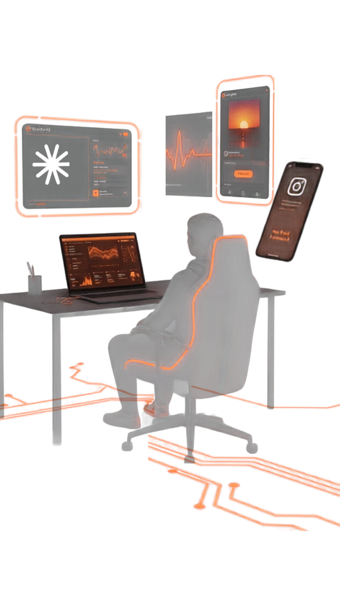
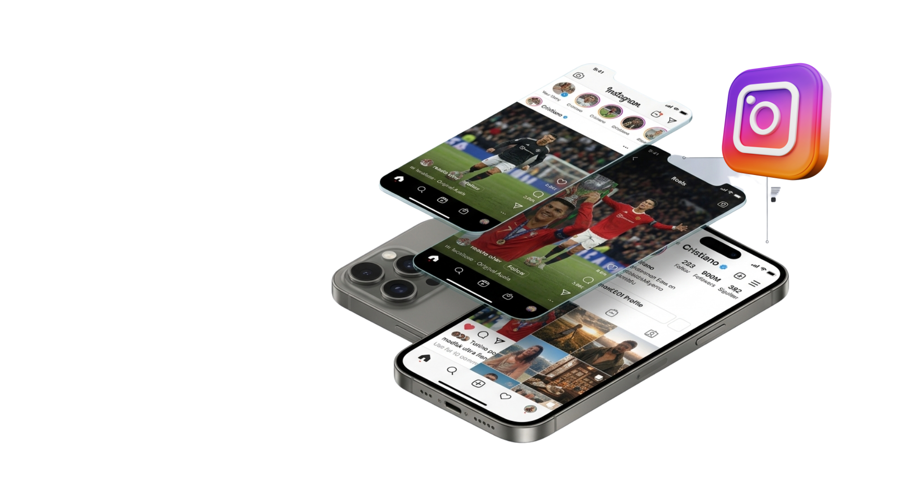

Time de IAs especialistas
Uma cuida do texto, outra do design da imagem, outra da estratégia de postagem — como uma agência inteira trabalhando junto, direto no seu Instagram.

Um time que trabalha 24h por você, enquanto você foca no que só você pode fazer. Você sai da imersão sem precisar mais fazer tudo sozinho.
Em 2 dias você sai com o Claude rodando seu Agente de IA, postando tudo sozinho no seu Instagram
Você não vai sair só "sabendo mexer em IA". Vai sair com agentes especialistas rodando por você.
Sem faculdade. Sem contratar ninguém. Sem meses de aprendizado. Dois dias.
Enquanto você foca no que só você pode fazer, o Claude cuida da postagem de ponta a ponta — do texto à publicação, sem você tocar no celular.

Cada etapa da imersão tem uma lição guiada, na ordem em que você vai fazer. Clique em uma etapa e veja o que você constrói.
Git, GitHub e Claude Code instalados na ordem certa — a base que a maioria pula. Você sai do bloco com o Claude Code aberto e logado.
PS C:\Users\voce> claude✔ Login successful. Welcome back!>
O editor que profissionais usam, com o Claude trabalhando dentro dele: você vê cada mudança e aceita ou rejeita com um clique.
index.html- <h1>Minha página</h1>+ <h1>Minha página inicial</h1>
Aprenda o método por trás do Claude — e se proteja de prompt injection desde o primeiro clique, sem decorar nada.
> /modelEscolha o modelo pra esta tarefa✔ Modelo trocado
O arquivo que guarda regras e contexto do projeto — com a persona do seu cliente ideal dentro, pra guiar cada post que o agente criar.
# Meu projeto## Regras- Responda sempre em português## Persona- Dores: sem tempo pra postar- Desejo: Instagram no automático
A parte que mais trava quem tenta sozinho, passo a passo e na ordem certa: do Facebook ao Token de Acesso.
EAAG••••••••••••••••vale 1 hora: gere só na hora de usarO Claude conduz a conversa: confere os pré-requisitos, salva o token com segurança e testa a conexão ao vivo.
1. Sua conta do Instagram é Profissional?> simTestando a conexão…✔ Conexão testada com sucesso!
As lições finais do tutorial — produção de conteúdo, pronto pra vender e o seu plano de 30 dias — ainda estão em preparação.
Telas ilustrativas, baseadas nas lições do tutorial.
Antes de você se inscrever, queremos mostrar uma coisa: não é sobre "aprender a usar ferramenta de IA". É sobre configurar o Claude do seu jeito, conectado ao seu Instagram, para você criar e programar suas postagens sozinho — sem depender de agência, sem ficar refém de social media, sem perder tempo editando imagem uma por uma.
Não é papo de vendedor. É o que a gente monta com nossos clientes todos os dias.
Uma cuida do texto, outra do design da imagem, outra da estratégia de postagem — como uma agência inteira trabalhando junto, direto no seu Instagram.
Não é só um rascunho: o post é criado, agendado e vai ao ar no seu Instagram de verdade — sem precisar abrir o Canva, sem precisar postar na mão.
Cada post, cada ideia, cada versão fica salva — como um "Google Drive" do seu conteúdo — pra você reaproveitar ou ajustar quando quiser.
Nada de banco de imagens genérico — uma IA especializada gera exatamente a imagem que aquele post precisa, na hora.
O resultado prático: o que levaria uma equipe tradicional dias para produzir — ideia, copy, imagem, agendamento — a gente faz em minutos. E é exatamente esse tipo de fluxo, adaptado pra sua realidade, que você vai aprender a montar (na medida certa pra você, sem precisar virar programador) na imersão.
Catorze horas ao longo de 2 dias, oito blocos práticos, com intervalos para descanso e almoço. Turma de 4 e 5 de dezembro.
A maior frustração de quem tenta usar IA avançada é pular etapas. Por isso a gente começa pelo que a maioria ignora — e na ordem exata em que cada peça precisa estar no lugar.
Todo mundo junto, passo a passo:
Isso sozinho já economiza o que você pagaria numa consultoria de setup — e tira aquele medo de "isso é muito avançado pra mim".
Requisito: conta Claude Pro ou Max. Sem um desses planos o Claude Code não libera o acesso — deixe a sua pronta antes do Dia 1 pra não perder tempo de tela.
Checkpoint: ao fim do bloco, o comando claude abre na sua máquina e você está logado.
Com o setup pronto, é hora de abrir o Claude Code de verdade dentro do VS Code — o mesmo editor que profissionais usam no dia a dia.
Tudo num lugar só, visual e no seu ritmo — sem ficar trocando de janela nem digitando às cegas.
Checkpoint: extensão instalada, pasta do projeto aberta e a primeira alteração do Claude aceita no editor.
Antes de sair digitando qualquer coisa, você aprende a se proteger dos riscos reais de quem usa IA no dia a dia — incluindo aquele truque de instrução escondida (prompt injection) que tenta manipular a IA sem você perceber. Com isso resolvido, faz a configuração inicial com calma, sem pular etapas.
Na prática, você:
/help)/model), economizando tempo e dinheiro quando o trabalho é simplesAtalhos e modos de uso que a maioria nunca descobre sozinha — e que fazem toda a diferença no dia a dia.
Checkpoint: você usa /help e /model sem consultar nada e sabe trocar entre os 3 modos. Pare de chutar comandos e aprenda o método por trás do Claude.
Pra fechar o Dia 1, você cria o arquivo que guarda as regras, o contexto e as decisões do projeto — assim o Claude (e qualquer pessoa que abrir depois) já sabe como tudo funciona, sem precisar reexplicar do zero a cada conversa.
E vai além:
É o hábito que separa quem usa IA no improviso de quem entrega projeto documentado, organizado e fácil de retomar — sozinho ou em equipe.
Checkpoint: CLAUDE.md criado, com a persona do seu negócio dentro. Amanhã a gente parte pro Dia 2: seu Agente de IA postando sozinho no Instagram, do texto à publicação.
A parte que mais trava quem tenta sozinho — por isso ela vem primeiro, com a turma toda junta e a cabeça fresca. Na ordem exata:
Requisito: Instagram Profissional (Business ou Creator). Se a sua conta ainda não for, o Claude te mostra como converter durante a configuração.
Checkpoint: Página vinculada ao Gerenciador de Negócios e o App criado no Meta, prontos pra receber o token.
Aqui você conhece o time de agentes de IA especializados — cada um focado numa função:
Um agente central, o Maestro, coordena todo mundo, distribuindo as tarefas e garantindo que o resultado saia consistente do início ao fim.
Pra ligar esse time ao seu Instagram, você:
Checkpoint: Instagram conectado e a mensagem "Conexão testada com sucesso!" na sua tela.
Com o Instagram conectado e a persona dentro do CLAUDE.md, o time de agentes entra em ação:
Checkpoint: o seu primeiro post criado pelo agente e publicado no seu Instagram.
Como transformar o que você construiu nos dois dias em:
Fechamos com prioridades, fluxos e próximos passos organizados pra aplicar tudo no seu contexto específico — o fechamento dos dois dias de imersão.
Checkpoint: você sai com o seu plano de 30 dias escrito e o sistema rodando.
Empreendedores que sabem que precisam postar todos os dias, mas não têm tempo nem equipe pra isso — e querem sair da imersão com o Instagram rodando no automático.
Profissionais de marketing, tráfego e social media que precisam entregar volume de conteúdo com qualidade e vão aprender a automatizar de vez a produção e publicação no Instagram.
Gestores e autônomos cansados de criar legenda, imagem e agendar post um por um — tarefas que uma IA bem configurada resolve sozinha, do zero ao publicado.
Quem já testou o ChatGPT ou outra IA algumas vezes, mas nunca conseguiu transformar isso em posts saindo no ar sozinhos — e quer sair daqui com o sistema pronto, não só ideias soltas.
Quem está começando do zero e quer sair da imersão com uma rotina de postagens 100% automatizada no Instagram, sem precisar aprender a programar.
Ambiente de desenvolvimento pronto — Claude Code instalado e configurado (terminal + VS Code + Git), pronto pra usar em qualquer projeto, não só na imersão.
Domínio dos comandos essenciais — /help,
/model e os 3 modos de execução (padrão, auto-aceitar, planejamento), sem precisar decorar
nada.
Um projeto real construído do zero, com os arquivos gerados e
documentados (CLAUDE.md).
Repositório próprio no GitHub, com histórico de versões — nunca mais perder trabalho ou depender de pen drive/print de tela.
Noção real de segurança com IA — como reconhecer e se proteger de prompt injection antes de dar acesso aos seus arquivos.
Primeiro contato com Skills e Agentes de IA — a porta de entrada pro que aprofunda no Dia 2.
Você não assiste — você faz junto, em tempo real, com suporte dos instrutores durante a própria aula.
Turmas reduzidas, para garantir atenção real a cada aluno — não um webinar de milhares de pessoas.
Conteúdo vivo: os instrutores usam IA operacionalmente no próprio trabalho, todos os dias.
Dois dias, cronograma fechado — sem se estender por semanas, sem curso infinito parado no Drive.
8 das 10 maiores empresas do mundo já usam Claude na operação
"IA vai dominar toda a engenharia de software em 6 a 12 meses."
Fórum Econômico Mundial, Jan 2026
Quem já aplicou está vendo resultado. Fotos de perfil entram assim que cada um autorizar o uso da própria imagem.
A imersão é conduzida por quem aplica IA na prática, todos os dias, no próprio negócio.
Há mais de 10 anos trabalhando com design e marketing digital, Anderson aplica IA todos os dias na criação de campanhas, páginas de vendas, vídeos e automações para clientes reais — não é teoria de curso, é o trabalho que ele entrega. E especialmente nessa imersão, ensina a criar a automação de postagens do instagram.
Mais de 20 anos transformando negócios através de tecnologia — de infraestrutura de TI a estratégias de marketing digital de ponta. Ensina a conectar sua IA ao Instagram e automatizar suas postagens, na prática.
Além dos 2 dias de imersão, você sai com uma coleção de prompts testados pra gerar imagens fotorrealistas de você mesmo — sem sessão de fotos, sem fotógrafo, sem precisar sair de casa. É colar o prompt na ferramenta de IA e postar.
Prompts pra gerar você em cenários variados — viagem, rotina, bastidores do trabalho — pra manter o feed sempre ativo e dar motivo real pra quem te segue interagir.
Um padrão visual consistente de fotos, pra transformar seu perfil em algo que dá vontade de seguir — sem depender de saber posar, ter equipamento ou contratar produção.
Prompts pra fotos formais e profissionais — pra usar no "sobre mim", em propostas, no site ou no perfil de negócio — o tipo de imagem que passa confiança antes mesmo da primeira mensagem.

O ingresso garante os 2 dias inteiros de imersão ao vivo, das 9h às 16h cada um. A gravação é um complemento opcional, oferecido só no momento do checkout.
Pagamento processado via Kiwify.
Dois dias, uma decisão: continuar aprendendo IA por vídeo solto, ou sair sabendo aplicar de verdade no seu trabalho.
Garantir minha vagaDúvidas antes de decidir? Veja o FAQ.
A imersão acontece ao vivo via Zoom, com câmera aberta e interação direta com os instrutores — você participa, faz perguntas e pratica durante o próprio dia.
Na tela de pagamento tem a opção de incluir a gravação completa(de R$ 247 por R$ 147). Incluindo, você fica com acesso por 1 ano.
Apenas o computador ou notebook com Zoom instalado. Quanto às demais instalações, faremos juntos no decorrer da imersão.
São dois dias de imersão, das 9h às 16h cada um, com quatro blocos e intervalos por dia — veja a programação completa acima. A próxima turma acontece nos dias 4 e 5 de dezembro.
[Definir fluxo: envio por e-mail após confirmação do pagamento, ou área de acesso própria.]
Se você incluir a gravação na tela de pagamento, pode assistir depois. Sem ela, a imersão ao vivo não é recuperável — por isso vale reservar os dois dias inteiros na agenda com antecedência.
Não. A imersão parte do básico até um uso mais avançado — o único pré-requisito é disposição para praticar durante o dia.
O ingresso sai de R$ 247 por R$ 147 à vista, com a gravação como complemento opcional (de R$ 247 por R$ 147) durante sua compra, processado via Kiwify. E tendo como formas de pagamento cartão, pix ou boleto.